|
|
|
|
Un punto álgido del festival fue cuando el TiT-SP difundió la noticia de la visita del conocido cineasta francés Jean-Luc Godard para dar una conferencia en el anfiteatro de la Facultad de Arquitectura y Urbanismo, que se abarrotó de gente a la hora estipulada. Los estudiantes de cine habían preparado una cena de agasajo al cineasta, posterior a la charla. El público, impaciente, reclamaba la presencia de Godard. Los titeanos pedían calma, diciendo que estaba en camino. Después de una hora de espera subió al escenario un hombre con anteojos oscuros y acompañado por dos guardaespaldas (era Cadao Volpato, miembro del grupo D'Magrela), dijo unas frases en un francés muy mal hablado, y a los pocos minutos la gente empezó a retirarse insultando a Godard. Esta acción, apodada luego Engodo Godard (Cebo Godard), fue comentada en un artículo publicado en el diario Estado de Sao Paulo, y se puede definir como una versión contemporánea de cuando Tristán Tzara difundió el rumor de que Charles Chaplin había adherido al dadaismo y estaría presente en la "Matinée Dadá" del Salón de los Independientes en 1920. Link a video con imágenes filmadas por el TIC (fragmentos) para documentar el viaje de los argentinos y momentos del festival. Otro momento perturbador, además del Engodo Godard, fue la intervención "La peste", comentada más abajo. Además de las muestras e intervenciones, hubo debates con el público y reuniones entre los grupos participantes para discutir el arte, la revolución y el rol de los artistas. El 22 de agosto, durante una reunión para discutir el balance del festival, los grupos participantes TiT-SP, TiT-BA, TiC, Cucaño y VSP (Viajou Sem Passaporte, de San Pablo), fundaron el MSI (Movimiento Surrealista Internacional) bajo el lema Subversión, imaginación, transgresión.
"La peste" En el marco del festival, el 16 de agosto, los artistas argentinos realizaron una intervención en Praça da Republica (una de las más concurridas de San Pablo) que fue llamada “La peste” y dirigida por Gallego. Desde hacía un par de años Gallego y su grupo investigaban en base a los conceptos que Artaud expuso en el primer capítulo de su libro "El teatro y su doble" de 1938, llamado "El teatro y la peste". Artaud planteaba allí que el verdadero teatro debería ser como una epidemia que exaltara los espíritus de la comunidad. Algunas citas de ese capítulo: "Es inútil dar razones precisas de ese delirio contagioso. Tanto valdría investigar por qué motivos el sistema nervioso responde al cabo de cierto tiempo a las vibraciones de la música más sutil, hasta que al fin esas vibraciones lo modifican de modo duradero. Ante todo importa admitir que, al igual que la peste, el teatro es un delirio, y es contagioso." "La peste toma imágenes dormidas, un desorden latente, y los activa de pronto transformándolos en los gestos más extremos; y el teatro toma también gestos y los lleva a su paroxismo. Como la peste, rehace la cadena entre lo que es y lo que no es, entre la virtualidad de lo posible y lo que ya existe en la naturaleza materializada. Redescubre la noción de las figuras y de los arquetipos, que operan como golpes de silencio, pausas, intermitencias del corazón, excitaciones de la linfa, imágenes inflamatorias que invaden la mente bruscamente despierta. El teatro nos restituye todos los conflictos que duermen en nosotros, con todos sus poderes, y da a esos poderes nombres que saludamos como símbolos; y he aquí que ante nosotros se desarrolla una batalla de símbolos, lanzados unos contra otros en una lucha imposible; pues sólo puede haber teatro a partir del momento en que inicia realmente lo imposible, y cuando la poesía de la escena alimenta y recalienta los símbolos realizados. Esos símbolos, signos de fuerzas maduras, esclavizadas hasta entonces e inutilizables en la realidad, estallan como increíbles imágenes, que otorgan derechos ciudadanos y de existencia a actos que son hostiles por naturaleza a la vida de las sociedades. Una verdadera pieza de teatro perturba el reposo de los sentidos, libera el inconsciente reprimido, incita a una especie de rebelión virtual (que por otra parte sólo ejerce todo su efecto permaneciendo virtual) e impone a la comunidad una actitud heroica y difícil." "El teatro, como la peste, es una crisis que se resuelve en la muerte o la curación. Y la peste es un mal superior porque es una crisis total, que sólo termina con la muerte o una purificación extrema. Asimismo el teatro es un mal, pues es el equilibrio supremo que no se alcanza sin destrucción. Invita al espíritu a un delirio que exalta sus energías; puede advertirse en fin que desde un punto de vista humano la acción del teatro, como la de la peste, es beneficiosa, pues al impulsar a los hombres a que se vean tal como son, hace caer la máscara, descubre la mentira, la debilidad, la bajeza, la hipocresía del mundo, sacude la inercia asfixiante de la materia que invade hasta los testimonios más claros de los sentidos; y revelando a las comunidades su oscuro poder, su fuerza oculta, las invita a tomar, frente al destino, una actitud heroica y superior, que nunca hubieran alcanzado de otra manera. Y el problema que ahora se plantea es saber si en este mundo que cae, que se suicida sin saberlo, se encontrará un núcleo de hombres capaces de imponer esta noción superior del teatro, hombres que restaurarán para todos nosotros el equivalente natural y mágico de los dogmas en que ya no creemos."
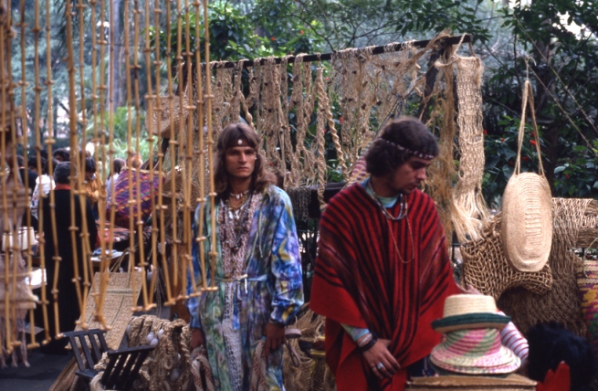 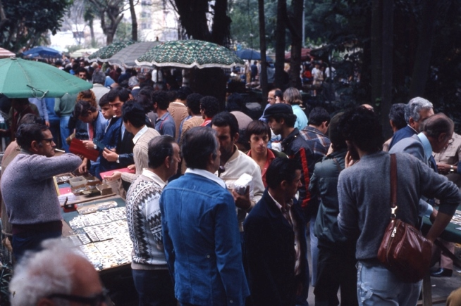 La intervención no estaba en el programa; durante el festival varios integrantes del grupo de artistas argentinos plantearon la necesidad de producir algo en un lugar público. En una reunión Gallego expuso su idea de "La peste" y varios miembros de Cucaño y del TiT-SP hicieron sus aportes. Se eligió domingo por la mañana en la Praça da Repùblica, una de las plazas más concurridas de San Pablo, especialmente un domingo. La idea de la intervención era que los actores del TiT y de Cucaño estuvieran desperdigados por la plaza, mezclados con los paseantes, y poco a poco se fueran descomponiendo físicamente para provocar un clima raro que fuera percibido por la gente. El objetivo era "vomitar" la situación de asfixia y muerte que vivía la juventud argentina, y hacércela sentir a los transeúntes paulistas, pero solo con gestos y movimientos. Cuando los actores lograran la atención de la gente, debían pararse y seguir su paseo normalmente, como si nada hubiera pasado. Mientras, los miembros del TiC debían filmar todo, especialmente las reacciones del público. 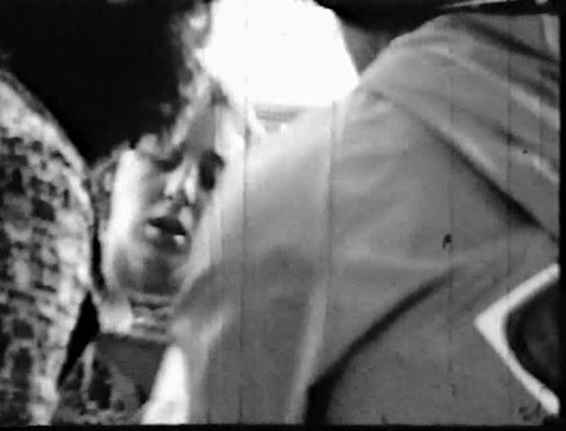 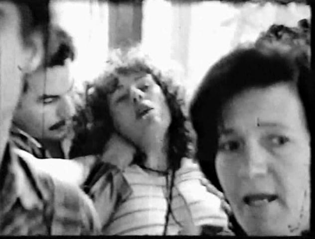 Pero las cosas se dieron de otra forma. Todo se desbordó. La plaza estaba llena, Gallego no pudo avisar a tiempo a todos los actores, que estaban diseminados en un área relativamente grande. Evidentemente los actores hicieron muy bien su papel, y la gente reaccionó muy rápido. Socorrió a los "enfermos", concentrándolos en glorietas. Al ver varios casos de personas descompuestas en distintos lugares de la plaza, muchos transeúntes entraron en pánico e imaginaron una intoxicación masiva por comida en mal estado vendida en la misma plaza, y fueron a increpar a vendedores ambulantes y a pedir explicaciones. 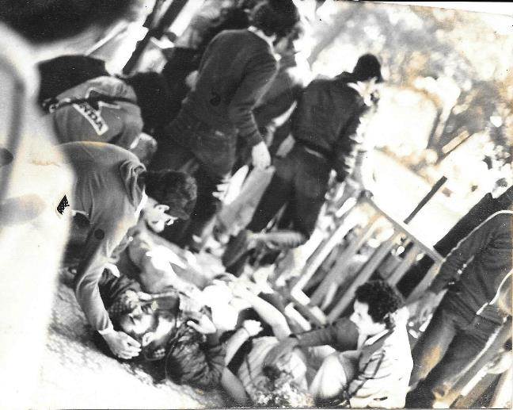 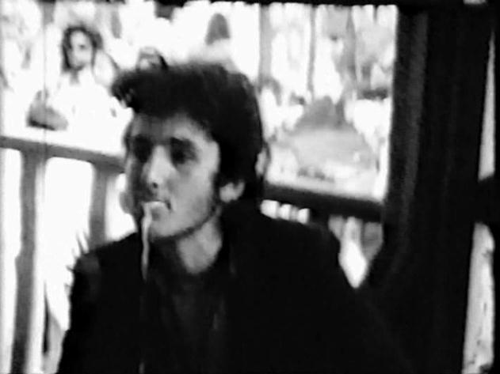
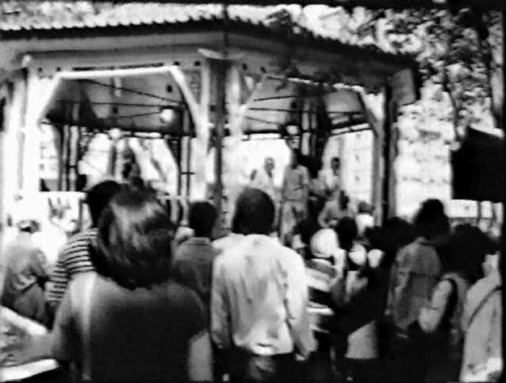 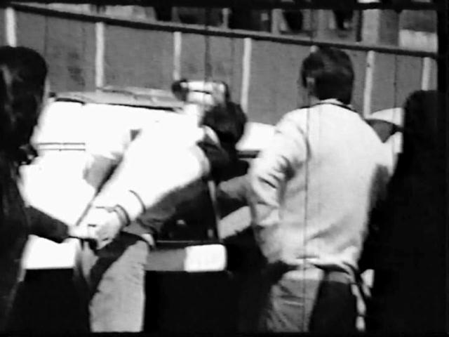 En muy pocos minutos se escucharon fuertes sirenas de varias ambulancias...y de varios patrulleros policiales. Cuando algunos actores eran trasladados a las ambulancias e hicieron saber que en realidad no estaban enfermos, se los trasladó a los patrulleros, y con ellos a la comisaría, donde se les inició acción judicial. Como consecuencia, varios jóvenes fueron deportados. 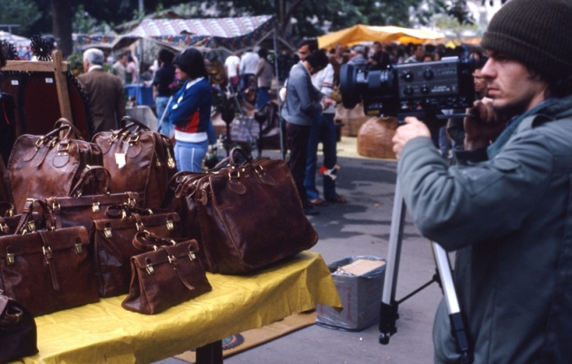 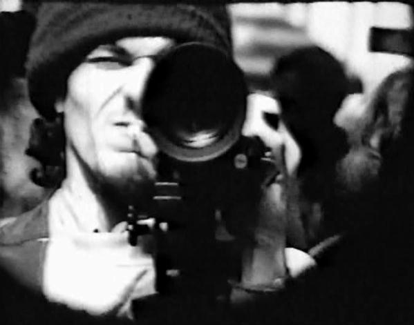 Link a video con fragmentos de la intervención, filmados por el TiC (solo un rollo de película sobrevivió; el resto, varios, fueron secuestrados por la policía). En las fotos de arriba se ve filmando a Sergio Bellotti.
Fotos de otros momentos de esos días (Tai Chi Chuang, reuniones)
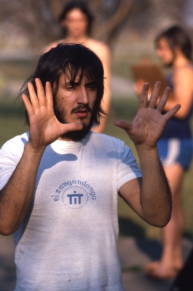 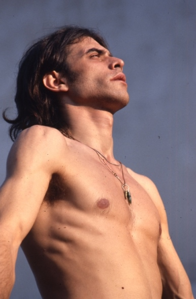 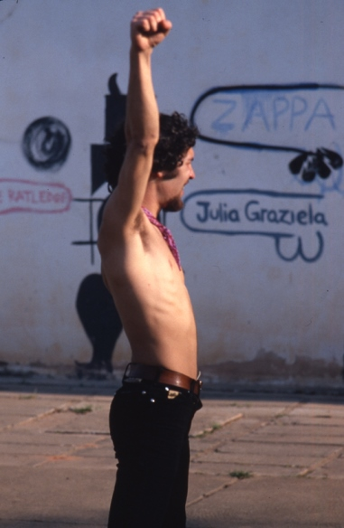 Arriba: Ricardo Chiari, Gallego y Marinho.
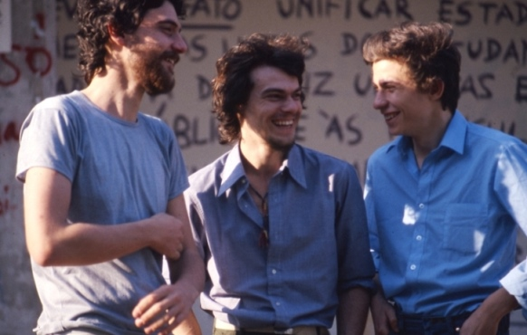 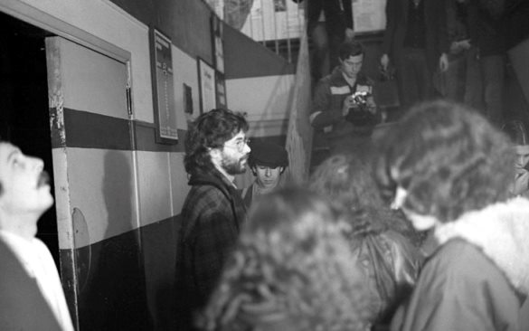
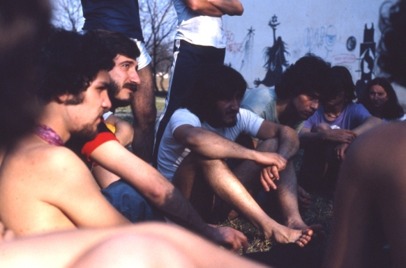 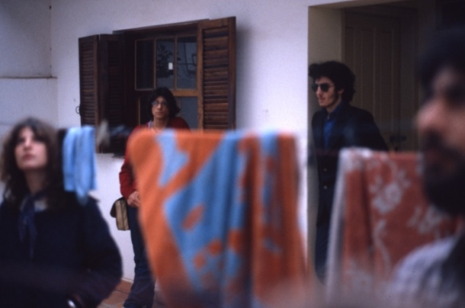
|